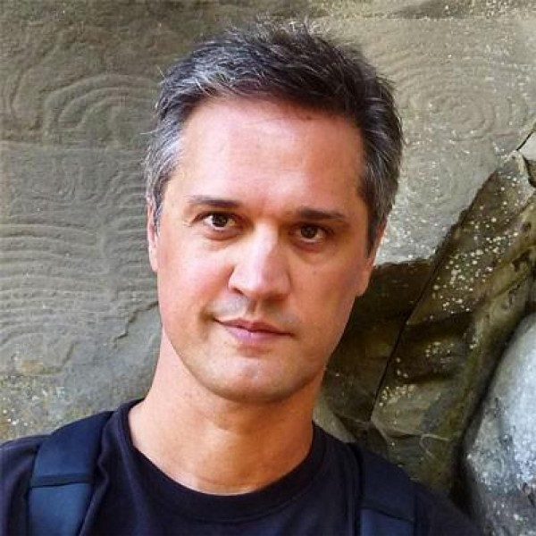
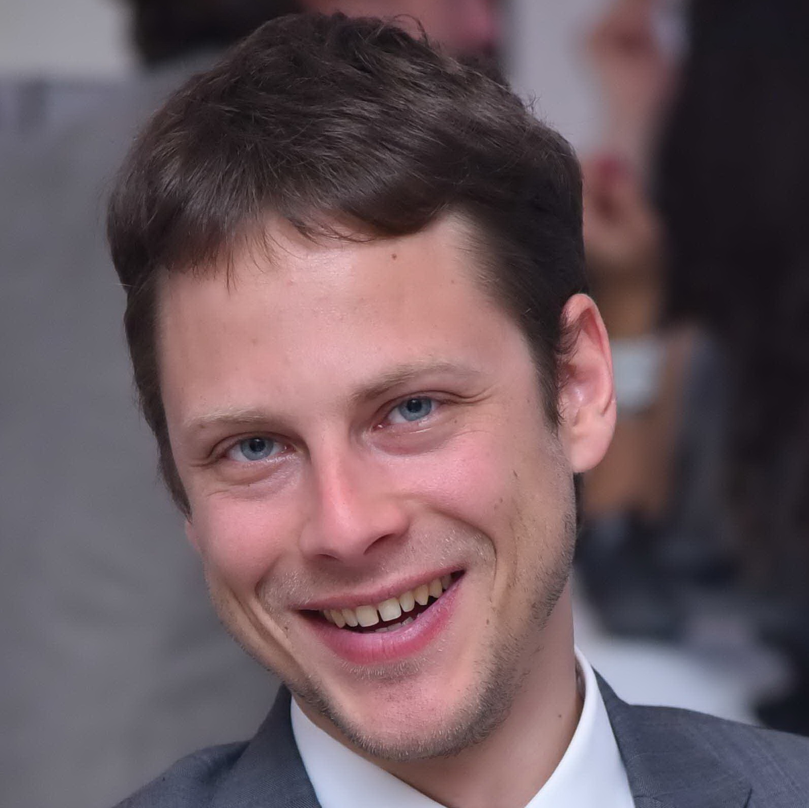

About TourismKG 2018
1st International Workshop on Knowledge Graphs on Travel and Tourism (TourismKG 2018) is a full-day workshop at the 18th International Conference on Web Engineering (ICWE 2018).
Travel and Tourism is a multibillion-dollar industry having a major impact on the global economy. An increasing number of people use applications on the Web to plan their trips. Although current applications are focused on humans, in the era of Big Data and Artificial Intelligence, there is a need for machine-readable data.
Semantic Web techniques such as ontologies or vocabularies allow domain experts to represent knowledge with explicit semantics in a machine-readable way. Besides, datasets can be transformed and integrated with this knowledge in order to create the so-called Knowledge Graphs. Such Knowledge Graphs, together with Machine Learning techniques, are used by popular applications such as Siri, Google Now, or Alexa. The success of these applications depends on the existence of high-quality knowledge graphs.
While Knowledge Graphs have been successfully used in other domains such as finance, medical or e-commerce, little attention has been paid to apply these technologies in the Tourism and Travel industry. Thus, the goal of this workshop is to raise the awareness of the importance of Knowledge Graphs on the travel industry and discuss their usage, challenges, enhancement, and ways of commercial exploitation.
Workshop structure: Although it will be adapted to the variety and content of accepted papers, we consider a keynote, paper presentations, and hands-on (DBpedia quality enhancement techniques, including the Spanish DBpedia as a source of local infomation).
Call for papers
- Topics of Interest
- Open Data, Proprietary Data, Semantic Web and Tourism
- Ontologies and Vocabularies for Travel and Tourism
- » User Requirements life cycle for Travel and Tourism
- » Vocabularies, thesauri, metadata schemas, and ontologies
- » Ontology creation, extraction, and evolution
- » Ontology mapping, merging, and alignment
- » Use and development of standards, such as SKOS, etc.
- » Ontology design patterns for Travel and Tourisms
- Knowledge Graph Generation and Completion for Travel and Tourism
- » Automatic information extraction; open information extraction, named entity extraction; ontology construction
- » Manual information extraction (crowdsourcing)
- » Entity resolution, relation extraction, information integration
- » Data transformation (CSV, XML, JSON, etc. to Knowledge Graph)
- » Data streams, online/on-the-fly adaptation of travel and tourism knowledge
- Techniques and applications of Knowledge Graphs for Travel and Tourism
- » Question-answering using KBs
- » Conversational systems (e.g. chatbots, voice assistants)
- » E-tourism services
- » Tourism recommender systems
- » Intelligent trip planners
- » Knowledge discovery and data mining on travel and tourism knowledge graphs
- » Reasoning strategies (e.g. context, temporal, spatial)
- » Machine learning and NLP techniques
Submission Guidelines
We envision three types of submissions in order to cover the entire spectrum from mature research papers to novel ideas and industry technical talks:
- » Research Papers (max 12 pages), presenting novel scientific research addressing the topics of the workshop.
- » Position Papers, Demo papers and System and Dataset descriptions (max 4 pages), encouraging papers describing significant work in progress, late breaking results or ideas of the domain, as well as functional systems or datasets relevant to the community.
- » Industry & Use Case Presentations (max 4 pages), in which industry experts can present and discuss practical solutions, use case prototypes, best practices, etc., in any stage of implementation.
Submission criteria are as follows:
- » Papers must adhere to the Springer LNCS format guidelines.
- » Papers should be in PDF or an equivalent in HTML format with RASH or dokeli.
- » Papers should be submitted to the workshop’s EasyChair submission pages.
The accepted papers will be published as Springer LNCS proceedings.
The authors of the accepted papers are given a presentation time slot of 25 minutes, with 5 minutes Q&A.
Important dates
| Paper Submission | Sunday April 15, 2018 |
Add to Calendar
04/15/2018 11:58 PM
04/15/2018 11:59 PM
Europe/Paris
TourismKG 2018 Paper Submission Deadline
1st International Workshop on Knowledge Graphs on Travel and Tourism (TourismKG 2018)
Caceres, Spain
TourismKG 2018 Organizing Committee
nmihindu@fi.upm.es
false
MM/DD/YYYY
|
| Acceptance Notification | Saturday April 28, 2018 |
Add to Calendar
04/28/2018 11:58 PM
04/28/2018 11:59 PM
Europe/Paris
TourismKG 2018 Acceptance Notification
1st International Workshop on Knowledge Graphs on Travel and Tourism (TourismKG 2018)
Cáceres, Spain
TourismKG 2018 Organizing Committee
nmihindu@fi.upm.es
false
MM/DD/YYYY
|
| Camera-ready version | Tuesday May 15, 2018 |
Add to Calendar
05/15/2018 11:58 PM
05/15/2018 11:59 PM
Europe/Paris
TourismKG 2018 Camera-ready Submission
1st International Workshop on Knowledge Graphs on Travel and Tourism (TourismKG 2018)
Caceres, Spain
TourismKG 2018 Organizing Committee
nmihindu@fi.upm.es
false
MM/DD/YYYY
|
| Workshop | Tuesday June 5, 2018 |
Add to Calendar
06/5/2018 11:58 PM
06/5/2018 11:59 PM
Europe/Paris
TourismKG 2018 Workshop
1st International Workshop on Knowledge Graphs on Travel and Tourism (TourismKG 2018)
Cáceres, Spain
TourismKG 2018 Organizing Committee
nmihindu@fi.upm.es
false
MM/DD/YYYY
|
| Final Paper Camera-ready version | Thursday July 5, 2018 |
Add to Calendar
07/05/2018 11:58 PM
07/05/2018 11:59 PM
Europe/Paris
TourismKG 2018 Final Paper Camera-ready Submission
1st International Workshop on Knowledge Graphs on Travel and Tourism (TourismKG 2018)
Cáceres, Spain
TourismKG 2018 Organizing Committee
nmihindu@fi.upm.es
false
MM/DD/YYYY
|
Accepted papers
| Mohammad Rifat Ahmmad Rashid, Giuseppe Rizzo, Marco Torchiano, Nandana Mihindukulasooriya and Oscar Corcho | Knowledge Base Evolution Analysis: A Case Study in the Tourism Domain |
| Nandana Mihindukulasooriya and Mariano Rico | Type Prediction of RDF Knowledge Graphs using Binary Classifiers with Structural Data |
| Elias Kärle, Umutcan Şimşek, Oleksandra Panasiuk and Dieter Fensel | Building an Ecosystem for the Tyrolean Tourism Knowledge Graph |
| Pablo Calleja, Freddy Priyatna, Nandana Mihindukulasooriya and Mariano Rico | DBtravel: a tourism-oriented semantic graph |
| Jean-Paul Calbimonte, Nancy Zappellaz, Emeline Hébert, Maya Simon, Nicolas Délétroz, Roger Hilfiker and Alexandre Cotting | SanTour: Towards Personalized Recommendation of Hiking Trails to Health Profiles |
| Nandana Mihindukulasooriya, Freddy Priyatna and Mariano Rico | Publishing Tourism Statistics as Linked Data - A Case Study of Sri Lanka |
| Shaban Shabani, Zhan Liu and Maria Sokhn | Semantic Network Visualization of Cultural Heritage Data |
| Andrea Cimmino, Nandana Mihindukulasooriya, Freddy Priyatna and Mariano Rico | Linked-Fiestas: A Knowledge Graph to Promote Cultural Tourism in Spain |
| Jose Luis Jorro Aragoneses and Susana Bautista Blasco | Adaptation Process in Context-Aware Recommender System of Accessible Tourism Plan |
| Yacine Sam | Linked Data Graphs For Semantic Data Integration in the CART System |
| Prasad N. Samarakoon and Nandana Mihindukulasooriya | Electronic Word-of-Mouth (eWOM) for Destination Promotion by Tourists |
| Rodolfo Baggio and Miriam Scaglione | Destination attractions system and Strategic Visitor Flows - An exploratory study |
| Ricardo Alonso Maturana, Susana López Sola, Maria Elena Alvarado Cortés, Maria Ortega and Pablo Hermoso de Mendoza | La Rioja Turismo: the construction and exploitation of a queryable Tourist Knowledge Graph |
Agenda
Collaborative agenda (editable by corresponding authors):here
Organizing Committee
-

Mariano Rico
Email: mariano.rico AT fi.upm.es
@marianoricoOntology Engineering Group, Universidad Politécnica de Madrid
He is creator and responsible for the Spanish DBpedia, the biggest DBpedia chapter after the English DBpedia. His research interests include Semantic Web, Linked Data, Natural Language Processing and Human-computer interaction.
-
Miriam Scaglione
Email: miriam.scaglione AT hevs.ch
School of Management & Tourism of the University of Applied Sciences Valais (HES-SO Valais)
Miriam Scaglione has a Ph.D. in Computer Sciences and M.Sc. in Statistics (Université de Neuchâtel), M.Sc. in Cognitive Sciences (EHSS, Paris); certified in database Swiss Federal Institute of Technology in Lausanne (EPFL), Switzerland, B.Sc. in Scientific Computing (Universidad de Buenos Aires). She is president of the Swiss Chapter of the International federation for IT and Travel & Tourism, member of the International Association of Scientific Experts in Tourism, International Institute of Forecasters. Her research interests include applied statistics and time series in tourism, the hospitality industry, transportation and forecast of technology diffusion in telecommunications and e-tourism. She leads regional impact studies of tourism and a big data project which aims to monitor the frequentation of tourists using mobiles phone data in Switzerland.
-

Filip Radulovic
Email: filip AT sepage.fr
@filiprdSépage, Paris
Filip leads Sépage's R&D department and heads the researchers team into the design of core recommendation and search algorithms and products. He holds a Ph.D. in Artificial Intelligence from the Technical University of Madrid (Universidad Politécnica de Madrid, UPM).
-

Rodolfo Baggio
Email: rodolfo.baggio AT unibocconi.it
@rudi51Rodolfo Baggio holds a Master degree in Physics and a PhD in Tourism Management. After working for leading information technology firms for over 20 years, he joined Bocconi University where he is in charge of the Market Analysis and Digital Strategies area at the Master in Economics and Tourism and is Research Fellow at the Dondena Centre for Research on Social Dynamics and Public Policy. He has been involved in several international research projects and actively researches and publishes on the use of information technologies in tourism and on the applications of quantitative complex network analysis methods to the study of tourism destinations.
-
Freddy Priyatna
Email: fpriyatna AT fi.upm.es
@freddy_priyatnaOntology Engineering Group, Universidad Politécnica de Madrid
Freddy Priyatna is a postdoctoral researcher at Ontology Engineering Group, Departamento de Inteligencia Artificial of Universidad Politécnica de Madrid. His main research interest is on the generation of Knowledge Graph from legacy datasets.
-
Nandana Mihindukulasooriya
Email: nmihindu AT fi.upm.es
@nandanamihinduOntology Engineering Group, Universidad Politécnica de Madrid
Nandana Mihindukulasooriya is a predoctoral researcher at Ontology Engineering Group, Departamento de Inteligencia Artificial of Universidad Politécnica de Madrid. His main research interests are Knowledge Graph quality assessment and repair.
Programme Committee
| Alicia Orea Giner | Universidad Rey Juan Carlos, Spain |
| Andrés García Silva | Expert System, Spain |
| Boris Villazón-Terrazas | Fujitsu Laboratories of Europe, Madrid, Spain |
| Carlos Buil Aranda | Universidad Técnica Federico Santa María, Chile |
| Chun Lu | Sorbonne University, France |
| Daniel Garijo | University of Southern California, USA |
| Dimitris Kontokostas | AKSW Group, Leipzig University, Germany |
| Ghislain Atemezing | Mondeca, France |
| Giuseppe Rizzo | Istituto Superiore Mario Boella (ISMB), Italy |
| Ioan Toma | Onlim GmbH, Austria |
| Jean-Paul Calbimonte | Institute of Information Systems (IIG) at the University of Applied Sciences and Arts Western Switzerland (HES-SO), Switzerland |
| Jeremy Debattista | ADAPT Centre, Trinity College Dublin, Ireland |
| Jose Luis Redondo Garcia | Amazon, Cambridge, UK |
| Jorge Gracia | Universidad de Zaragoza, Spain |
| Lucas Carvalho | Instituto de Computação,Universidade Estadual de Campinas |
| Oshani Seneviratne | Rensselaer Polytechnic Institute (RPI), Troy, NY, USA |
| Udana Wickramasinghe | Director - ICT, Sri Lanka Tourism Promotion Bureau, Sri Lanka |
| Roland Schegg | Institut Tourisme, University of Applied Sciences and Arts, Switzerland |
Location
TourismKG 2018 will be held as part of ICWE 2018 in Cáceres, Spain.
Cáceres is a Spanish world heritage city situated in a strategic position just in the middle between Madrid and Lisbon. It stands out for its mixture of culture, history and nature. Every corner of Cáceres transmits a calm, friendly and relaxing atmosphere. Conference delegates will be able to enjoy each of these corners while they walk to the conference venue or in their leisure time.